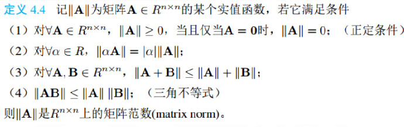

向量范数
-
对于实向量x，下面给出几种常见的范数：
1-范数：
∣∣x∣∣1=i=1∑n∣xi∣
2-范数：
∣∣x∣∣2=(i=1∑n∣xi∣2)21=(xTx)21
∞-范数：
∣∣x∣∣∞=max1≤i≤n∣xi∣
由此我们可以定义p-范数为：
- ∣∣x∣∣2=(i=1∑n∣xi∣p)p1,p≥1
向量范数的等价性
- 设∣∣x∣∣s 和 ∣∣x∣∣t为Rn上任意两种向量范数，则存在常量c1,c2>0，使得对一切x∈Rn有：
c1∣∣x∣∣s≤∣∣x∣∣t≤c2∣∣x∣∣s
矩阵范数

在以上基础上，实际使用的矩阵范数还满足以下相容性条件：
- ∀A∈Rn×n,x∈Rn,∣∣Ax∣∣≤∣∣A∣∣ ∣∣x∣∣
定义矩阵的算子范数为，这衡量了线性变换中对x伸缩的最大倍数。
矩阵A的算子范数为:
1-范数：
- ∣∣A∣∣1=1≤j≤nmaxi=1∑n∣aij∣
2-范数：
- ∣∣A∣∣2=λmax(ATA),表示ATA的最大特征值
∞-范数：
- ∣∣A∣∣∞=max1≤i≤nj=1∑n∣aij∣
矩阵条件数
矩阵条件数是衡量非奇异矩阵的敏感程度，也就是方程Ax=b中ΔA、Δb的变化对矩阵的影响程度；我们不加证明的说明一下几个定理。
条件数定义：
- cond=∣∣Δb∣∣/∣∣b∣∣∣∣Δx∣∣/∣∣x∣∣
设A为非奇异矩阵，则矩阵的条件数为：
- cond(A)v=∣∣A∣∣v∣∣A−1∣∣=x≠0max∣∣x∣∣∣∣Ax∣∣/x≠0min∣∣x∣∣∣∣Ax∣∣
根据条件数的定义，可以推导其和矩阵条件数的关系（考虑方程右边扰动）：
∵A(x+Δx)=b+Δb
AΔx=Δb⇒Δx=A−1Δb⇒∣∣Δx∣∣≤∣∣A−1∣∣ ∣∣Δb∣∣
Ax=b⇒∣∣b∣∣≤∣∣A∣∣ ∣∣x∣∣
∴cond=∣∣Δb∣∣/∣∣b∣∣∣∣Δx∣∣/∣∣x∣∣=∣∣Δb∣∣ ∣∣x∣∣∣∣Δx∣∣ ∣∣b∣∣≤∣∣Δb∣∣ ∣∣x∣∣∣∣A−1∣∣ ∣∣Δb∣∣ ∣∣A∣∣ ∣∣x∣∣=∣∣A∣∣ ∣∣A−1∣∣
矩阵的条件数为误差传递的上限，可衡量矩阵的敏感性
奇异矩阵的条件数为无穷大，因此cond(A)越大，越接近于奇异矩阵。
-
直观的来看，矩阵的条件数反映了矩阵的奇异程度，相对于行列式只能反映是否为奇异矩阵，是一个更好的度量方式。
矩阵的谱半径
设实矩阵A∈Rn×n的特征值为λi，称ρ为A的谱半径：
谱半径的大小不超过任何一种算子范数。
圆盘定理
∣λ−akk∣≤j=1,j≠k∑n∣akj∣
直观的来看，在平面中，A的每个特征值都属于A的格什戈林圆盘中
可以用圆盘定理估计矩阵的特征值范围。
幂法
在矩阵A的特征值中，模最大的特征值称为主特征值，也叫“第一特征值”。对应的特征向量为主特征向量。
主特征值可能不唯一（正数负数复数）。
这里注意谱半径和主特征值的区别
如果矩阵有唯一主特征值，则能通过幂法计算出主特征值和特征向量。幂法的计算过程是，首先任取一非零向量v0∈Rn，再迭代计算
k→∞limλ1kvk=x1
k→∞lim(vk)j(vk+1)j=λ1
如果模最大的特征值是重根且非亏损(代数重数等于几何重数)的话幂法适用，但是一旦出现亏损就容易出问题。
幻方矩阵的最大特征值为行和，即为2n(n2+1)。